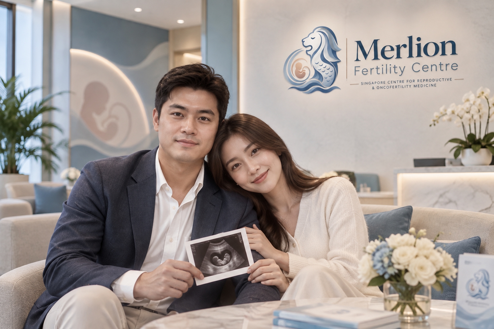
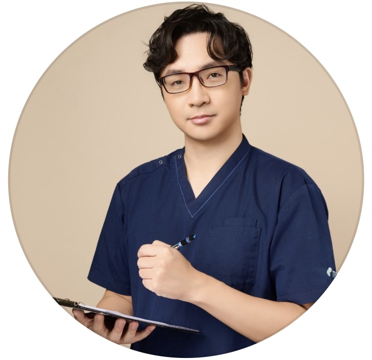
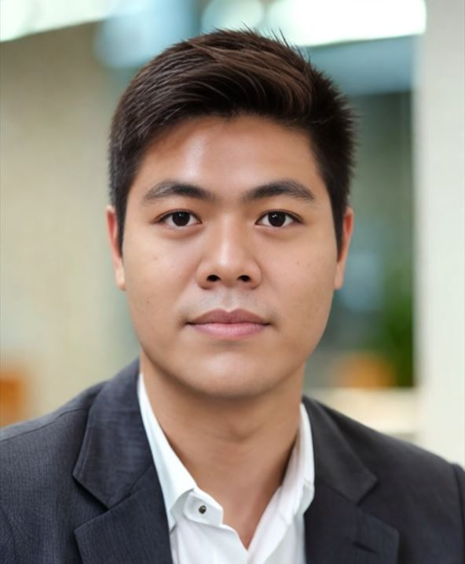

Preserving fertility. Protecting possibilities.
Every path to parenthood, held with care.
Merlion Fertility Centre brings together advanced reproductive medicine and rapid-access fertility preservation for cancer patients — guided by a team that treats each story with the attention it deserves.
National Cancer Centre Singapore·Singapore General Hospital·Duke-NUS Medical School·National University Hospital·KK Women's & Children's Hospital·Private Oncology Centres
Why Merlion Fertility Centre
Built around what matters most, from day one
6 Core Services
From IVF and ICSI to fertility preservation, andrology, recurrent miscarriage care and genetic testing — comprehensive reproductive medicine under one roof.
Fast-Track Oncofertility
Patients newly diagnosed with cancer receive fertility counselling and preservation before treatment begins, coordinated directly with their oncology team.
Preserve a Future Fund
Subsidised fertility preservation for eligible cancer patients facing financial barriers, supported by the Singapore Cancer Society and community partners.
About the centre
Reproductive medicine, and the courage to hope again.
Merlion Fertility Centre offers comprehensive reproductive medicine alongside a dedicated referral pathway for cancer patients who need fertility preservation. Our rapid-access oncology program means patients newly diagnosed with cancer can receive fertility counselling and preservation before starting treatment, with no time lost.
We maintain close referral and collaborative relationships with Singapore's major oncology and tertiary institutions, and every patient — whether beginning IVF or racing against a treatment start date — is supported by a care coordinator from their very first appointment.

What we treat
Care built around your specific path
Every fertility journey is different. Our services span conception support, fertility preservation, and the diagnostics that help explain what's happening in your body.
IVF & ICSI
In-vitro fertilisation and intracytoplasmic sperm injection, tailored through individualised stimulation protocols and continuous embryo monitoring in our accredited laboratory.
Egg & Embryo Freezing
Vitrification-based freezing for patients planning ahead — whether for career, medical, or personal reasons — with long-term secure cryostorage on site.
Oncofertility
Rapid-turnaround fertility preservation for patients beginning cancer treatment, coordinated directly with your oncology team so no time is lost before therapy begins.
Male Fertility & Andrology
Comprehensive semen analysis, hormonal workups, and surgical sperm retrieval, addressing the male-factor half of the fertility conversation with equal depth.
Recurrent Miscarriage Care
Structured investigation of recurrent pregnancy loss, including immunological, anatomical, and genetic screening, alongside emotional support throughout.
Genetic Testing & Counselling
Pre-implantation genetic testing (PGT) and carrier screening, paired with genetic counselling to help you understand results and next steps clearly.
Our clinicians
Meet the team you'll see, appointment after appointment
Continuity of care matters. You'll work with the same lead clinician throughout your treatment, supported by our embryology and nursing teams.
Dr. Niu Niu
Dr. Niu sees patients across IVF, ICSI and fertility assessment, and is closely involved in the centre's rapid-access oncofertility pathway — making sure patients newly diagnosed with cancer are seen and counselled before treatment begins.
Dr. Aggie Xu
Dr. Xu focuses on fertility preservation and andrology, guiding patients through egg, sperm and embryo freezing with clear explanations at every step, from initial consultation through to cryostorage.

Jeffrey Tzeng
Jeffrey oversees the embryology laboratory's quality, safety and clinical governance, from equipment validation to laboratory monitoring — ensuring every gamete and embryo is cared for under tightly controlled conditions.

Samuel Lionardi
Samuel works across OPU support, ICSI, vitrification and time-lapse culture in the laboratory, and plays a key role in the centre's ongoing quality monitoring and KPI review process.
Patient stories
Stories from families we've cared for
Visit or reach us
Let's talk about your next step
Address
82 Goodman Road
Singapore 439047
Phone & Email
+65 6235 0000
hello@merlionfertility.sg
Clinic Hours
Monday – Friday: 9.00am – 5.00pm
Weekends & Public Holidays: Closed